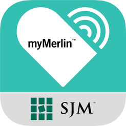

Somesh Arora
Mobile Application Developer

Education
-
The University of Texas at Arlington
-
B.S. in Computer Science
-
Graduation: August 2018
-
Engineering Dean's List
Skills
iOS and Android Development
Swift Java C# Cocoa Pods ARKit XCode Android Studio SDK APIs BLE XML Storyboards
Methodologies & Tools
Agile SDLC Visio Github AccuRev Vim Sketch Slack Trello Confluence Jira Genymotion Visual Studio Overleaf
Frameworks
Cocoa Touch UIKit Appium Ionic Flutter Bootstrap
Cross Plateform Development Tools
Xamarin Ionic Apache Cordova
Databases
Firebase MySQL SQLite Core Data
Languages
Swift Objective-C Java C C++ C# Python Git UML MATLAB HTML5 CSS Assembly
Interests
Mobile Development
Web Development
Volunteering
Travelling
Research
Coffee
Hiking
Cars
Achievements
-
Outstanding Freshman Scholarship from the University of Texas at Arlington
-
Donna & Dorothy Vruwink Will Memorial Scholarship from the Department of Computer Science and Engineering at UT Arlington.
-
Awarded with Aim & Utility Award for Cryptography and Cyber Security presentation.
-
Won 1st Prize competing in the Augmented Reality application demonstration competition.
Testimonial
Outstanding self-starter is the phrase that comes to mind when I think about Somesh. I had the pleasure of working with Somesh as one of the undergraduate teaching assistants in the Engineering Problem Solving course I teach at The University of Texas at Arlington.I was particularly impressed by Somesh’s ability to handle even the toughest students effortlessly. That skill often takes years to develop among educational professionals, but it seemed to come naturally to him. You would never know that he is helping students with a class he never had the opportunity to take. He also voluntarily helped me personally with moving some boxes of previous student work into storage and with preparing the classroom for exams. I will miss his leadership in patiently helping other teaching assistants learn their role in the classroom. As a team member or a leader, Somesh earns my highest recommendation.
Dr. Kendra Wallis
Senior Lecturer at UT Arlington
In the News
Cuttin' up
Kimoi Jeptoo, mathematics sophomore, and Somesh Arora, computer science freshman, help demolish "popcorn" trees, an invasive plant along the Gulf Coast, during the Alternative Spring Break trip to Mississippi.
Alternative Breaks
Before I went to the trip, I never knew what it is like to cook food for more than 200 people. I miss every minute of the trip and I would recommend everyone to join the trip because it gives the feeling of self-satisfaction.
About Me
Hello! My name is Somesh Arora and I am a Sofware developer with industry experience working on development and testing of iOS and Android applications for Abbott Laboratories. Experienced Teaching Assistant with a demonstrated history of holding multiple Leadership Positions. Skilled in Swift, C, Java, Agile Methodologies, Software Development Cycle, and User Interface Design. Strong education professional with a Bachelor’s Degree focused in Computer Science from The University of Texas at Arlington.
Work Experience
Undergraduate Teaching Assistant
College of Engineering at UT Arlington
Arlington, TX
Aug 2015 - May 2016 & Jan 2018 - Current
Teamwork Leadership Problem Solving Engagement MATLAB Programming-
Paired up with an instructor to teach engineering problem-solving course, ENGR 1300.
-
Course includes learning a problem-solving process, engineering writing, and MATLAB coding.
-
Use active learning techniques in class to coach students for algorithm development and engineering concepts.
-
Assist students with assignments and homeworks during daily engineering clinic and also proctored exams.
-
Engage 75+ students to work in small groups and solve engineering problems.
Mobile Application Developer Co-op
Abbott Laboratories
Sylmar, CA
Jul 2017 - Jan 2018
Agile Scrum SDLC Mobile Development Software Testing BLE Swift FirebaseBLE OTA iOS Application
-
Contributed to development of an iOS application, BLE OTA, that discovers and displays nearby BLE peripherals of a certain type.
-
After a connection is establised, the app is used to test Abbott’s proprietary medical devices at different frequencies, modulations, and channels.
-
Performs read and write operations to the device's firmware.
-
The application is currently being used by Firmware department both, in the United States (Sylmar) and China to test the device prototypes.
Asset Manager iOS Application
-
Developed an iOS application, Asset Manager, using Swift and Firebase Database to checkout and check-in assets.
-
Used agile approach to design, develop, and test the application.
-
Integrated barcode scanner to scan employee ID (code 128) and asset's barcode (code 39) to automate the process.
-
Some features of the app include admin & user privileges, push notifications, reminder emails, device history & status, asset request form etc.
Other Projects and Tasks
-
Contributed to testing and debugging of Confirm RX patient-end iOS and Android application.
-
Participated in Scrum meetings to update the team on ongoing progress and discussed obstacles.
Resident Assistant
Apartment and Residence Life at UT Arlington
Arlington, TX
Aug 2016 - June 2017
Problem Solving Customer Service Leadership Crisis Management-
Served as a role model for 40 residential students, used the best judgment, maturity, and helped resident students realize their potential for personal development through group living.
-
Planned, prepared, and executed monthly programs, take-to events, newsletters, buttetin-boards, and spontaneous activities for the residents.
-
Received through training from trained professionals to provide crisis intervention, conflict mediation, counseling, tutoring, and advertisement to residential students.
-
Ensured safely and security of the residents by serving on-call duty and responded to after hours calls. Performed welfare check on residents on a regular basis.
-
Worked with 5 other fellow RAs and supervisor to plan campus-wide events, conducted cleanliness and safely inspections, performed late night community-wide walkthroughs to ensure safely and reported all pertinent information to the supervisor or police.
Student Assistant
UT Arlington | Arlington ISD
Arlington, TX
Aug 2016 - May 2017
Leadership Involvement Mentorship Customer Service-
Mentored 5 Martin High School sophomore & junior students interested in pursueing a career in computer science field as part of the Arlington ISD STEM Academy program.
-
Helped students with questions related to the career path and provided guidance to have a smooth transition from high school to college.
-
Assisted students to set goals and worked with them towards achieveing those goals.
Peer Academic Leader | MAVS 1000
Division of Student Affairs at UT Arlington
Arlington, TX
Aug 2015 - Dec 2016
Leadership Teamwork Mentorship-
MAVS 1000 is a first year freshman level course that is offered to all the incoming freshman students at UTA.
-
This course provide students with campus information, resources and help them have a smooth transition from high school to college.
-
Peer Academic Leaders are paired up with an instructor to educate students on academic and personal skills, as well as engagement.
Alternative Breaks Site Leader
The Leadership Center at UT Arlington
Arlington, TX | St. Louis, MO
May 2015 - May 2016
Volunteering Environmental Relief Leadership Teamwork-
Alternative Breaks at UTA provides an opprotunity to students to travel and participate in weeklong community service projects.
-
I was responsible to lead a group of 54 students for a week long volunteering project to St. Louis, Missouri forcused on Environmental and Disaster Relief, as well as education.
-
Attened weekly meetings with the advisor and the leadership team to brainstorm ideas for the trip and updated them with the progress and discussed the obstacles.
-
Conducted educational sessions and meetings before the trip to educate participants about the cause and other trip detials.
-
Ensured all university policies and procedures are being followed at all times.
Projects
Offline Password Wallet iOS App
Swift Sketch Git Core Data-
Offline Password Wallet is an iOS application that encrypts and stores sensitive information (e.g. login credentials) locally on the device.
-
To prevent information theft, the application can only be accessed using using the registered user's biometrics (Touch ID/Face ID).
-
The information stored in the application remains untouched even if the device gets stolen or hacked.

HUD Speedometer iOS App
Swift Sketch Git Location API-
HUD Speedometer application is developed to provide users with better driving experience by displaying the current speed and direction of travel on the vehicle's windshield.
-
Application features day and night mode for improved visibility, supports multiple speed units, and provides over speed warnings.

Virtual Ruler iOS App
Swift Sketch Git UIScene ARKit-
The application can mesures the distance between objects using the phone's camera by utilizing the ARKit and SceneKit functionalities. Thus, eliminating the need of carring a physical measuing tape.
UT Arlington Resource Android App
Java SQLite Git Android Studio-
App allows users to access campus event information, form/join clubs, buy/sell articles, participate/host discussions, and access other resources such as advising and dining hours.
POS Kiosk Android App for Visually Impaired
Java Google Talkback API Git Android Studio-
App works on embedded android device and allows users to utilize laundry room functionality.
-
Acts as a POS Kiosk to process payments for Washing/Drying.
-
Utilizes Google's talkback API and color schematics to assist visually impaired users.
Leadership & Community Service
-
Executive Vice President for the National Society of Collegiate Scholars at UT Arlington (2015-2017).
-
Foundation of Leadership Coursework (EDAD 1130) at UT Arlington.
-
Active Member of the Leadership Honors Program at UT Arlington.
-
Site Leader for The Big Event at UT Arlington.
-
Site Leader for The Super Service Saturday at UT Arlington.
-
200+ Volunteering Hours working with different organizations at several locations.